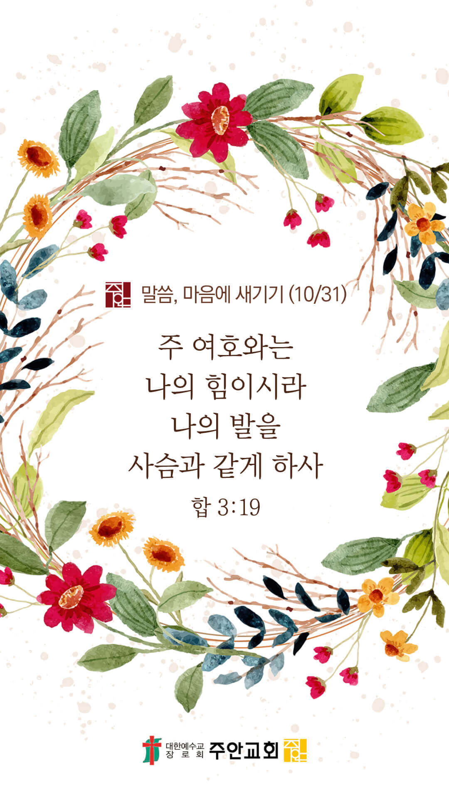

기도실 안내
2021년 10월 31일 (주일)
- 온라인 기도실은 온 회중이 함께 주님 앞으로 나아가는 자리입니다
- 30분 정도 여유를 가지고 하시기 바랍니다
- 말씀과 묵상, 찬양과 기도로 나아갑니다
- 배경 음악이 나올 수 있습니다 볼륨을 조절해주세요
준비가 되셨으면 아래의 버튼을 눌러주세요
할렐루야
내 영혼아 여호와를 찬양하라
시 146:1
- 가사를 묵상하며 읽습니다
하늘보다 높으신 주 사랑
바다보다 넓으신 주 사랑
나를 향한 크고 높으신 사랑
헛되고 헛된 그 모든 것
내게서 멀리 거두셨네
나의 수치 찬양 되었네
영원히 감사 드리리
주님의 그 은혜
할렐루야
내 영혼아 여호와를 찬양하라
시 146:1
- 가사를 묵상하며 읽습니다
날 찾아주신 그 사랑 오 주님 내 전부
사랑해요 경배해요 나 주 위해 살리
영원토록 신실하신 주 사랑을 전하리
하나님께서 세상을 사랑하사
독생자를 주셨으니
믿는 자는 영생을 얻으리
난 믿네 다시 사신 독생자 난 믿네
할렐루야
내 영혼아 여호와를 찬양하라
시 146:1
하늘보다 높으신 주 사랑 by Scott Brenner
위의 찬양이 끝나면 말씀읽기를 눌러주시면 됩니다
주의 말씀은 내 발에 등이요
내 길에 빛이니이다 (시119:105)
오늘의 말씀입니다
음악 소리가 크면 조절하시기 바랍니다

마음의 묵상
하박국 3:19
“주 여호와는 나의 힘이시라 나의 발을 사슴과 같게 하사 나를 나의 높은 곳으로 다니게 하시리로다 이 노래는 지휘하는 사람을 위하여 내 수금에 맞춘 것이니라”
1. 당신은 어떨 때 가장 힘이 나고 또 어떨 때 가장 힘이 빠지나요?
2. “주 여호와는 나의 힘이시라” 이 고백이 당신의 고백이 되길 바라시나요?
3. 우리의 진정한 힘 되시는 여호와를 그분들(VIP)도 믿게 되길 간절히 기도합시다
나의 발을 사슴과 같게 하사...
회개, 삶의 방향을 바꾸는 결정
복음에 무심했던 나, 변화시켜주소서
“내가 복음을 전할지라도
자랑할 것이 없음은 내가 부득불 할 일임이라
만일 복음을 전하지 아니하면
내게 화가 있을 것이로다”
- 고린도전서 9:16 -
3분 정도 회개하며 주님 앞에 나아갑니다
사슴이 시냇물을 찾기에 갈급함 같이
시 42:1
- 다음의 말씀을 소리 내어 읽습니다
[고린도전서 9:19-21]
19 내가 모든 사람에게서 자유로우나 스스로 모든 사람에게 종이 된 것은 더 많은 사람을 얻고자 함이라
20 유대인들에게 내가 유대인과 같이 된 것은 유대인들을 얻고자 함이요 율법 아래에 있는 자들에게는 내가 율법 아래에 있지 아니하나 율법 아래에 있는 자 같이 된 것은 율법 아래에 있는 자들을 얻고자 함이요
21 율법 없는 자에게는 내가 하나님께는 율법 없는 자가 아니요 도리어 그리스도의 율법 아래에 있는 자이나 율법 없는 자와 같이 된 것은 율법 없는 자들을 얻고자 함이라
나라와민족을 위한 복음
1. 나라와 민족을 복음으로 변화시켜주소서
능력의 하나님,
한국 교회와 성도들이 복음으로 변화된 삶을 살게 하소서. 그리하여 세상이 교회를 바라보며 하나님의 살아계심과 역사하심을 보게 하여 주옵소서.
하나님의 영광을 가리고 주님의 덕을 전하지 못한 저희가 진정으로 회개하게 하시고, 약해진 저희의 믿음을 강건케 하시며,
다시금 복음 안에서 진정한 그리스도인들로 거듭나게 하소서.
간절한 마음으로 3분 정도 기도합시다
주안교회의 사명
2. 주안교회가 영혼구원의 사명을 끝까지 감당하게 하소서
사랑의 주님,
원로목사님의 영육을 강건하게 지켜주시고, 연로한 성도님들의 건강을 지켜주소서. 주안교회가 여기까지 올 수 있도록 수고하신 믿음의 선배들이
평안한 노후를 보낼 수 있도록 영육 간에 강건함을 허락해주소서. 또한 그분들의 전도의 열정을 본받아 모든 주안의 성도들이 영혼구원의 사명을
끝까지 순종하며 감당케 하옵소서.
간절한 마음으로 3분 정도 기도합시다
주님의 주관하심
3. 올라인 예수사랑큰잔치를 친히 주관하여 주소서
우주만물을 주관하시는 하나님,
올라인 예수사랑큰잔치에 강하게 임재하여 주소서. 이번 주간 동안 발송되는 초청장이 전도대상자들(VIP)에게 잘 전달되게 하소서.
전달 과정에서 막힘이나 실패, 기계적인 문제나 온라인상의 문제들이 발생하지 않게 하소서.
성도들이 온라인 플랫폼을 잘 활용할 수 있도록 지혜를 부어주시고, 초청의 메시지를 통해 VIP들의 마음 문이 활짝 열리게 하옵소서.
간절한 마음으로 3분 정도 기도합시다
주님의 인도하심
4. 올라인 예수사랑큰잔치의 과정과 결과를 지켜주소서
보혜사 성령님,
저희가 유능한 전도자로 쓰임 받게 도와주소서. 전도가 마음의 부담이 되지 않게 하시고 기쁨으로 하나님의 일에 동참하게 하옵소서.
이번 주부터 완화되는 위드 코로나 방침 안에서 효과적으로 사람들을 잘 만나게 하시고,
“전도의 미련한 것으로 믿는 자들을 구원하시기를 기뻐하시는” 주님의 마음을 품고 담대히 나아가 복음을 전파하게 하옵소서.
간절한 마음으로 3분 정도 기도합시다
말씀에 순종
5. 우리가 말씀에 순종하게 하소서
하나님 아버지,
저희가 주님의 마음을 올바로 알게 하소서. 하나님께서 진정으로 원하시는 것을 깨닫고 순종하게 하옵소서.
더 이상 인생을 위해 하나님을 이용하는 죄를 범치 않게 하시고, 저희가 주님을 부를 때 친히 들으시고 응답하시는 아버지 하나님을 만나게 하옵소서.
그리하여 하나님께서 베푸시는 진정한 회복과 부흥을 경험하게 하시고, 하나님의 나라를 수축하고 보수하는 하나님의 친 백성이 되게 하옵소서.
간절한 마음으로 3분 정도 기도합시다
감사의 기도
- 오늘 기도를 인도하신 주님께 감사를 올려드립니다
- 아래의 구절을 읽고 주님께 감사의 마음을 올려드립시다
“그런즉 너희가 먹든지 마시든지 무엇을 하든지 다 하나님의 영광을 위하여 하라”
- 고린도전서 10장 31절 -
고요한 가운데 잠시 침묵하시기 바랍니다
파송, 세상을 향하여
- 오늘의 온라인 기도를 마쳤습니다
기도를 들으신 주님께서 평안히 가라 하십니다
주님께서 우리와 함께 하시니 두려울 것이 없습니다
새벽을 깨우며
- 새벽기도회 안내입니다